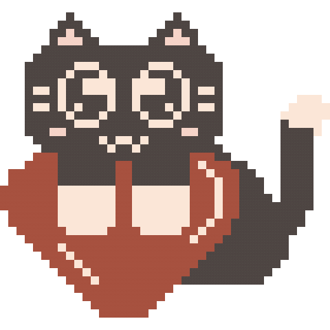

Do you love me?

Happy Monthsary! hehe i wish you'll love this gift, everthing here was all manually drew for my babii. eto yung naisip kong gift because coding this type of stuff really reminds me of us, i will design and you will codee hihi kumbaga "we're compatible" like how my mom put it XD. I know our relationship hasn’t been easy lately, but I’m really grateful that we’re still choosing each other despite everything. I’m sorry if there are things I can’t always give as a girlfriend. I know I can be cold or manhid sometimes, but please know that I truly love you, and I’m working on myself so I can love you better.
I’m so happy and thankful that I get to be with you. The way you accept all my flaws and continue loving me means so much. Honestly, loving you and putting effort into this relationship is one of the best things I’ve ever done for myself, and i always thank God dahil nagkakilala tayo.
Thank you so much, bub, for always being such a supportive and loving boyfriend. My only wish is that you won’t have nightmares anymore and that you stay healthy always. No matter what happens, please remember that I’m always here for you. You can tell me everything, your flaws, worries, and problems. I promise to always listen. I may not always have the best responses, but I’ll always try my best to understand you, and we’ll figure things out together, okay?
I love you so much, babiiiiii. Happy 6th monthsary ulit, mahal ko